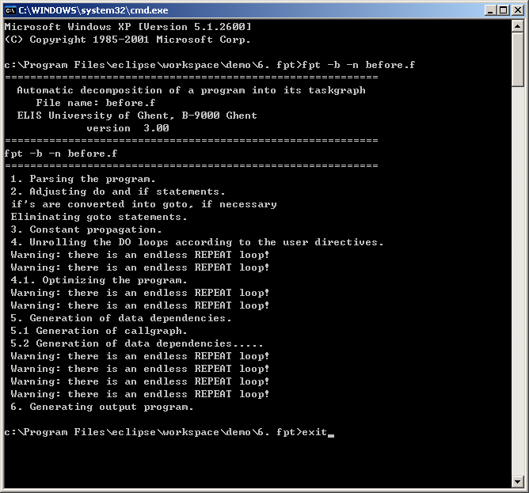

Here is the translated Fortran program with GOTO statements converted from the
statecharts of refactored SquirrelMail.
call EnterURL
10 call Login
if (wrongIMAP) goto 30
20 call ShowForm
if (wrongKey) goto 20
call EnterForm
if (wrongForm) goto 30
call StartWebMail
if (loggedOut) goto 10
if (expired) goto 10
call Send
Stop
30 call ReportError
call GoBack
goto 10
end
It is saved as "before.f". Then,
The GOTO is eliminated by the following command:
fpt -b -n before.f

The machine-generated code without GOTO statements is called "before-par.f".
LOGICAL br1,br2,br3,br4
br4=.False.
br3=.False.
br2=.False.
br1=.False.
CALL enterurl
REPEAT
REPEAT
REPEAT
CALL login
IF (wrongimap) THEN
br1=.True.
EXIT
ENDIF
REPEAT
CALL showform
UNTIL (.not.wrongkey)
CALL enterform
IF (wrongform) THEN
br2=.True.
EXIT
ENDIF
CALL startwebmail
UNTIL (.not.loggedout)
IF (br2) THEN
br3=.True.
EXIT
ENDIF
IF (br1) THEN
br4=.True.
EXIT
ENDIF
UNTIL (.not.expired)
IF (.not.br4) THEN
IF (.not.br3) THEN
CALL send
STOP
ENDIF
ENDIF
CALL reporterror
CALL goback
UNTIL (.False.)
END
It can be simplified easily into the following structured code
"after.f":
CALL EnterURL
REPEAT
REPEAT
CALL Login
IF (.not.wrongIMAP) THEN
REPEAT
CALL ShowForm
UNTIL (.not.wrongKey)
CALL EnterForm
IF(.not.wrongForm)THEN
CALL StartWebmail
ENDIF
ENDIF
UNTIL (.not.loggedOut.or .not.expired.or.wrongIMAP.or.wrongForm)
IF(wrongIMAP.or.wrongForm)
THEN
CALL ReportError
CALL GoBack
ENDIF
UNTIL (.not.wrongIMAP.and.not.wrongForm)
CALL Send
END
Resources
binary of fpt.exe, here is the cgi version of the
compiler
before.f
before-par.f
after.f